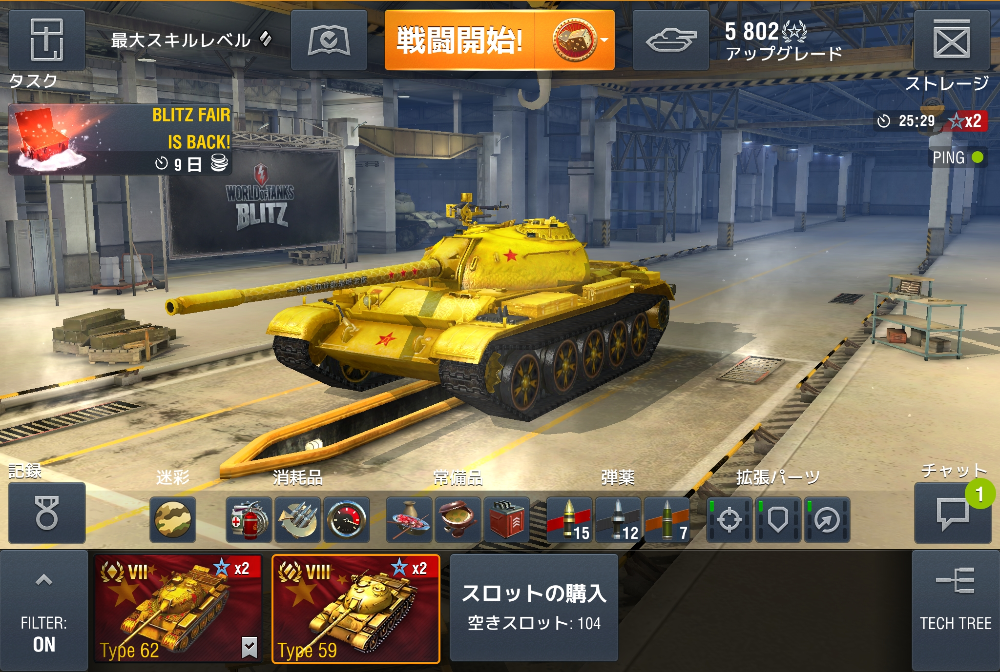
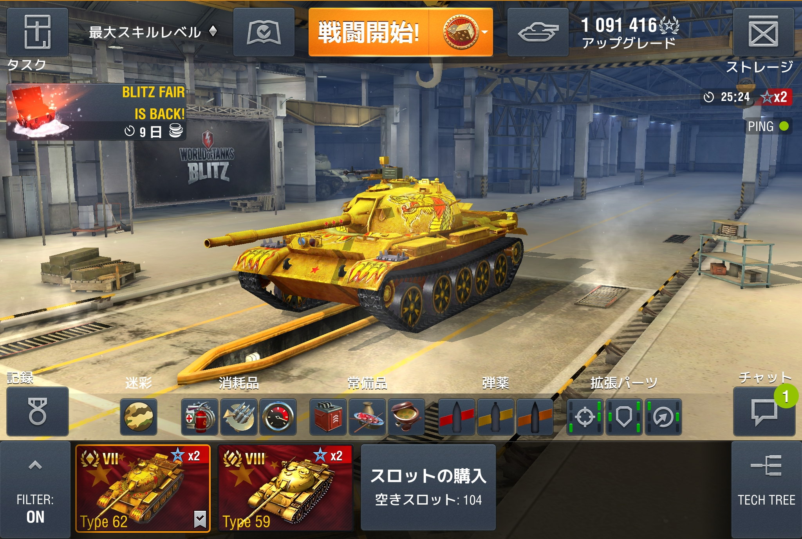

GOLDEN TYPE59 and TYPE62
Creator
Special Tanks
Trucks for t-54/t-62A/Type59
Mod Information
- ID: 3d.tank_skin.type59_62_gold
- Description: GOLDEN TYPE59 and TYPE62 Tank skin set.
- © 2014–2018 Wargaming.net. Powered by BigWorld Technology™ ©
Sample Image

